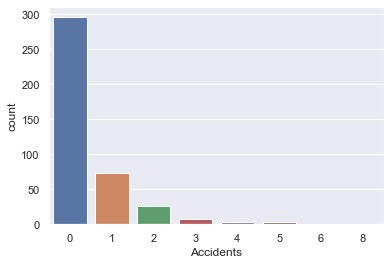

Large-sample confidence intervals for a proportion
Summary
The aim of this notebook is to produce a large sample approximate 99% confidence interval for the proportion of machinists who experienced at least one accident over a period of time. The confidence interval was calculated to be (0.228, 0.342).
Introduction
The report is concerned with producing an interval estimate for the proportion of machinists who suffered at least one accident over a period of time. The data is historical, and constists of a single data field that contains the number of accidents suffered by each of the 414 machinists over the period of observation. The data was provided by M248: Analysing data, who in turn sourced it from Greenwood, M. and Yue, G.U. (1920).
Method
An estimate of the proportion of machinists who suffered an accident was calculated.
A normal approximated on the binomial was then used to calculate a large sample approximate 99% confidence interval for the proportion.
We can use a normal approximation given the sample size (\(n=\)414).
All calculations were done in Python, using the following packages: pandas, statsmodels, seaborn (visualisations), and matplotlib (visualisations).
Results
Setup the notebook
# import the packages
from src import load
from statsmodels.stats.proportion import proportion_confint
import seaborn as sns
import matplotlib.pyplot as plt
# set the Seaborn theme
sns.set_theme()
# load the data
accidents = load.accidents()
Visualise the data
sns.countplot(data=accidents, x="Accidents")
plt.show()

Return the \(z\)-interval
# declare the parameters
x = accidents.query('Accidents != 0').index.size
n = accidents.index.size
# get the estimate proportion
x/n
1 | |
# return the confidence interval
proportion_confint(count=x, nobs=n, alpha=0.01)
1 | |
References
Greenwood, M. and Yue, G.U. (1920). 'An inquiry into the nature of frequency distributions representative of happening with the particular reference to the occurrence of multiple attacks of disease or of repeated accidents', Journal of the Royal Statistics Society, vol. 83, no. 2, pp. 255-79.